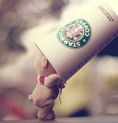

Our Tea
Tea has been a part of Starbucks heritage since 1971, when the company was founded as Starbucks Coffee, Tea and Spices.
In 2012, Starbucks acquired Teavana and has taken steps to integrate Teavana® teas into its Starbucks stores.
Customers will soon experience a variety of Teavana products at Starbucks, including handcrafted drinks, loose-leaf teas and tea merchandise.
In addition, the company recently launched a new store concept called Teavana Fine Tea + Tea Bars in Seattle and New York.
The new tea bars feature a carefully curated assortment of handcrafted tea beverages, premium loose-leaf teas, tea-inspired food offerings and beautifully made tea merchandise, making the ritual of tea more elevated and accessible for customers.
Tea Drinks
Delicious flavors emerge with New Teavana™ Shaken Iced Teas—hand shaken ten times to mix and unlock all of the unique flavors. A sublime escape, from the very first sip.
Brewed Tea
Tea Latte
Teavana®
Delicious flavors emerge with New Teavana™ Shaken Iced Teas—hand shaken ten times to mix and unlock all of the unique flavors. A sublime escape, from the very first sip.
Brewed Tea
Tea Latte
Teavana®